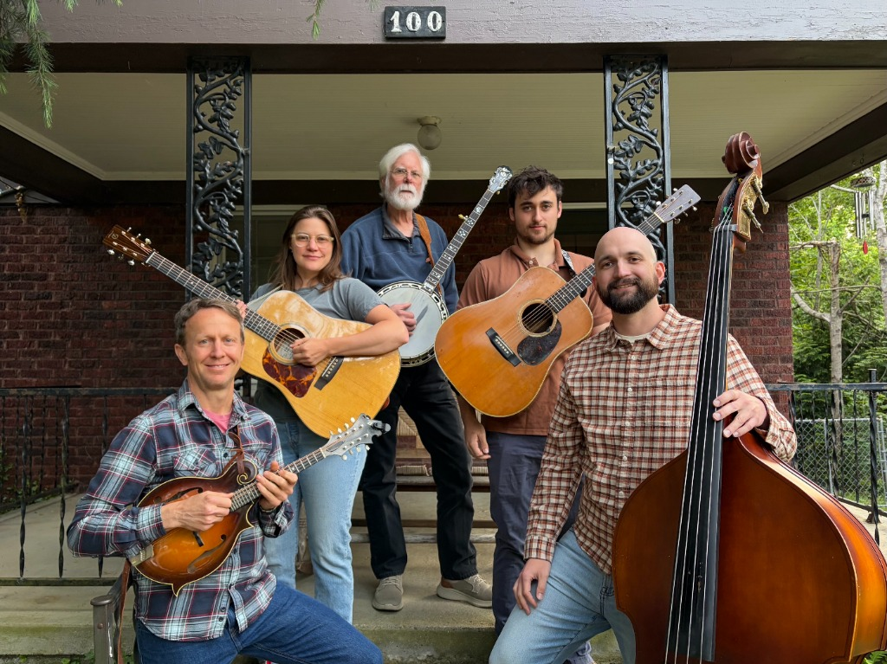

APPALACHIA HAZE
Nestled in the Blue Ridge Mountains of Western North Carolina, uniting people through fiddle music, traditional, contemporary, and progressive bluegrass.
WANT APPALACHIA HAZE TO PLAY AT YOUR VENUE OR FESTIVAL?

Nestled in the Blue Ridge Mountains of Western North Carolina, five musicians found themselves playing together at various bluegrass jams in Asheville.
While their backgrounds and ages varied greatly, their love and appreciation of Appalachian music was a common bond and came united them from many different pathways, all loving to play fiddle music as well as traditional, contemporary and progressive bluegrass.
They began to meet weekly to feel out their musical directions and eventually Appalachia Haze was born, not only out of the reference to the music, but to the history and culture of the region as well.
THE PICKERS
5-PIECE STRING BANDMitchell Harbin
Scott Woody
Bryan Clendenin
Sam Gottlieb
Sarah Swilley
Highway of Regret / These Old Blues
Live performance breakdown recorded in Asheville, NC. Driving traditional bluegrass featuring flatpicking leads, Scruggs banjo rolls, percussive mandolin, and upright bass rhythm.